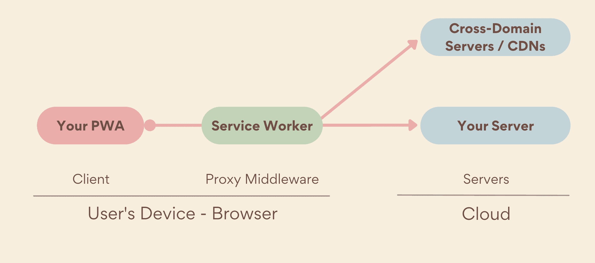

A progressive web app (PWA) is an app that's built using web platform technologies, but that provides a user experience like that of a platform-specific app. Like a website, a PWA can run on multiple platforms and devices from a single codebase. Like a platform-specific app, it can be installed on the device, can operate while offline and in the background, and can integrate with the device and with other installed apps.
